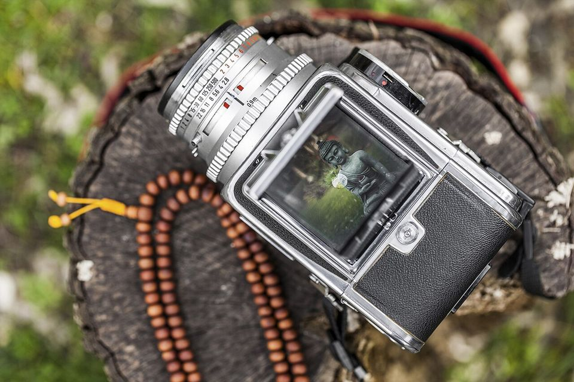
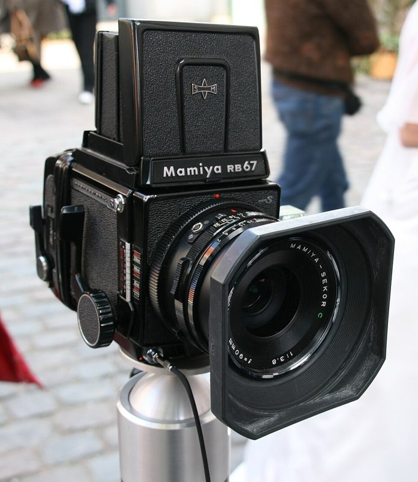

중형 SLR · RF Medium format · 120
120 필름을 쓰는 본격 중형. 35mm보다 3~4배 큰 면적이 주는 부드러운 계조가 특징입니다.


어떻게 찍히나요
120 필름 한 롤에 화면 크기(6×4.5, 6×6, 6×7, 6×9)에 따라 8~16장을 찍습니다. 화면이 35mm보다 3~4배 커서 확대해도 입자가 거의 보이지 않고, 같은 화각에서 배경이 더 부드럽게 흐려집니다. 필름 매거진을 갈아 끼우는 기종은 롤 중간에 필름을 바꿀 수도 있습니다.
이런 분께 추천
- 큰 사이즈로 인화할 계획이 있는 분
- 인물·풍경을 천천히 공들여 찍는 분
- 35mm로는 부족함을 느끼는 분
좋은 점과 아쉬운 점
- 좋은 점
- 압도적인 디테일
- 아쉬운 점
- 무겁고 비쌈, 롤당 8~16장
대표 기종
Pentax 67 · Mamiya RB67 · Hasselblad 500C/M · Mamiya 7 · Fuji GW690
대략적인 가격
80만 ~ 400만 원
어울리는 필름
중고로 살 때 확인할 것
- 렌즈 셔터(리프 셔터)가 모든 속도에서 작동하는지
- 필름 매거진의 차광 슬라이드와 카운터 확인
- 무게(1.5~2.5kg)를 직접 들어 보고 결정